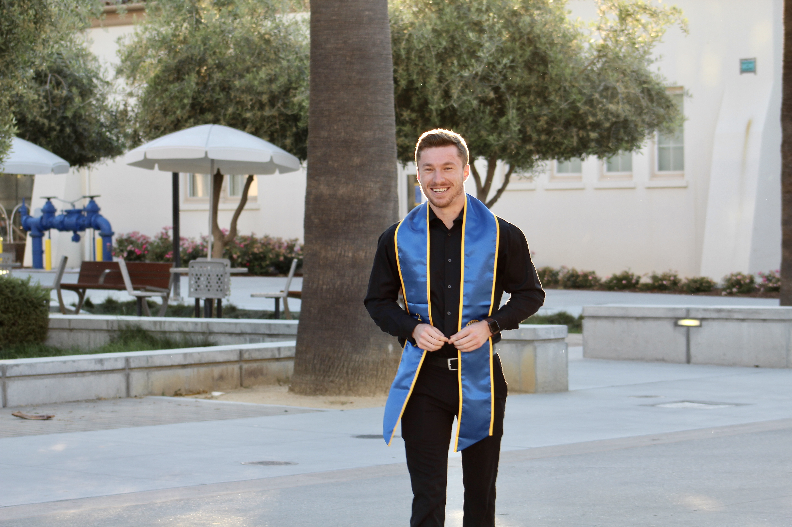

About Me

I am currently developing my new career in software engineering. I am 25 years of age and have
struggled throughout majority of my life when it comes to deciding what is right for my career. With
other aspects of life, I have been very certain. I come from a family of six, being the youngest boy out
of four. I have always had a passion for sports, video games, and socializing with new people. Ever
since I was very young, I have always been talented with math skills. So coming from a family of
accountants, this seemed like the best fit for my future career.
When I applied to the University of San Jose State, I applied for the department of Accountancy.
After two years of tough courses, many late nights and a newly developed caffeine addiction, I quickly
realized this is not what I want to do with my life. I eventually changed my majors twice, landing on a
major that better suits my passion for meeting new people and conversation: Business Marketing. While
this was a good fit for my character, it didn't take long to realize that this too was not fit for
myself. After moving back home into my childhood house, I decided to take some time off of work and
really learn about myself. Maybe there are passions I have that I haven't discovered yet. Maybe there is
a hidden talent for something other than mathematics.
On a whim, I decided to construct my very first PC simply for the fun of it. While I knew the
process would be new, I invested all of my attention (and let's not forget a large amount of cash), and
ended up creating a computer from scratch. While I had a great time during the project, I would have
never thought that my favorite part was the coding process to create the Microsoft Windows application
bootable from a flashdrive. How is this done? Computer coding! While this is a small step in the large
world of web development, it quickly made me finally find my career passion. I received my certificate
of completion from the University of Berkley Bootcamp, and have been in desire of a full time position
ever since.